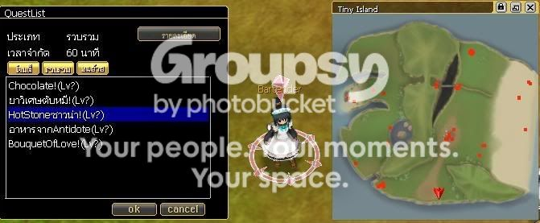
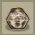

หน้า 255 จากทั้งหมด 296

โพสต์แล้ว:
เสาร์ 20 มิ.ย. 2009 6:46 pmโดย ECO
โพสต์แล้ว:
เสาร์ 20 มิ.ย. 2009 6:48 pmโดย ECO
ทำเป็นเล่นไป
ซื้อหนังแผ่นมา ยังเจอหนังไทย ซับ ไทยเล้ย ดูไปขำไป

โพสต์แล้ว:
เสาร์ 20 มิ.ย. 2009 6:58 pmโดย ECO
เควสทำ Heart Full Bean [ถั่วรักษาสัตว์]

รับเควสที่ตำแหน่งตามภาพ
โดยมีทั้งหมด 5 เควสให้เลือก มีดังนี้
Chocolate 5 อัน
Gall of Bear 5 อัน
Hoka Stone 5 อัน
Antidote Fruit 5 อัน
Bouquet Love 5 อัน
โดยเควสหนึ่งเควสจะได้ Heart Full Bean 1 อัน
โพสต์แล้ว:
เสาร์ 20 มิ.ย. 2009 7:32 pmโดย ECO
โพสต์แล้ว:
เสาร์ 20 มิ.ย. 2009 8:05 pmโดย ECO
Maimai Private Cloth (W)B
หรือชุดไมไมสีเขียวได้จาก Treasure 16 (กล่องที่ไมไมไง)
Leopard Pattern Cat Ear
ได้จาก Wood Box 6 , Container 4 , Container 5 , Treasure 1
โพสต์แล้ว:
เสาร์ 20 มิ.ย. 2009 9:44 pmโดย ECO
-0-"
สงสัยต้องไปเฝ้าไมไมแล้ว ของดีเหลือเกิน - -.
โพสต์แล้ว:
อาทิตย์ 21 มิ.ย. 2009 12:05 amโดย ECO
ข่าวร้ายหน่อยนะลี่จัง..
กล่องแดงมันเกิดยาก
โพสต์แล้ว:
อาทิตย์ 21 มิ.ย. 2009 12:34 amโดย ECO
ยากจริงๆแระตาเอก หามา 4 ช.ได้มา 10 กว่ากล่อง - -*
ว่าแต่ซากดาบ 90 หาจากไหนหว่า
โพสต์แล้ว:
อาทิตย์ 21 มิ.ย. 2009 12:46 amโดย ECO
ขอถามเรื่อง skill Monster sketch ของ Sage หน่อยคับ
แต่ละเลเวลที่เพิ่มขึ้นของสกิลมันส่งผลยังไงบ้างคับ
คุ้มค่ามั้ยถ้าจะอัพให้เต็ม 5 คับ....
โพสต์แล้ว:
อาทิตย์ 21 มิ.ย. 2009 12:57 amโดย ECO
sirjez เขียน:ขอถามเรื่อง skill Monster sketch ของ Sage หน่อยคับ
แต่ละเลเวลที่เพิ่มขึ้นของสกิลมันส่งผลยังไงบ้างคับ
คุ้มค่ามั้ยถ้าจะอัพให้เต็ม 5 คับ....
มีผลต่อการใช้สมุดสเกตครับ...อัพเวลน้อยก็พกสมุดสเกตไปเยอะๆครับ...
ลิลลี่จัง เขียน:ยากจริงๆแระตาเอก หามา 4 ช.ได้มา 10 กว่ากล่อง - -*
ว่าแต่ซากดาบ 90 หาจากไหนหว่า
ซากดาบ 90 ? ขอชื่อดาบ
โพสต์แล้ว:
อาทิตย์ 21 มิ.ย. 2009 12:59 amโดย ECO
หน้าตาดี เขียน:ซากดาบ 90 ? ขอชื่อดาบ
พอรู้แระตาเอก เหมือนจะใช้ flint อะไรนี่อะ -0-"
โพสต์แล้ว:
อาทิตย์ 21 มิ.ย. 2009 5:24 amโดย ECO
เควส Cleanup Campaign
Archen Thorn
Level ขั้นต่ำ : 1
จำนวน : 30
เวลา : 900 นาที
เงินรางวัล : 160
EXP / Job EXP : 100 / 100
ของรางวัล : ECO Ticket
Cocko Wing
Level ขั้นต่ำ : 4
จำนวน : 30
เวลา : 900 นาที
เงินรางวัล : 800
EXP / Job EXP : 300 / 300
ของรางวัล : ECO Ticket
Veggy Juice
Level ขั้นต่ำ : 9
จำนวน : 30
เวลา : 900 นาที
เงินรางวัล : 1,600
EXP / Job EXP : 750 / 750
ของรางวัล : ECO Ticket
 Seriko
Level ขั้นต่ำ
Seriko
Level ขั้นต่ำ : 14
จำนวน : 30
เวลา : 900 นาที
เงินรางวัล : 2,400
EXP / Job EXP : 2,000 / 2,000
ของรางวัล : ECO Ticket
 Piece of Tree
Level ขั้นต่ำ
Piece of Tree
Level ขั้นต่ำ : 19
จำนวน : 30
เวลา : 900 นาที
เงินรางวัล : 3,200
EXP / Job EXP : 4,500 / 4,500
ของรางวัล : ECO Ticket
Bone
Level ขั้นต่ำ : 24
จำนวน : 30
เวลา : 900 นาที
เงินรางวัล : 4,000
EXP / Job EXP : 5,600 / 5,600
ของรางวัล : ECO Ticket
Antidote Juice
Level ขั้นต่ำ : 29
จำนวน : 30
เวลา : 900 นาที
เงินรางวัล : 4,800
EXP / Job EXP : 8,500 / 8,500
ของรางวัล : ECO Ticket
Mutant
Level ขั้นต่ำ : 34
จำนวน : 30
เวลา : 900 นาที
เงินรางวัล : 5,600
EXP / Job EXP : 11,000 / 11,000
ของรางวัล : ECO Ticket
 Fabric Piece
Level ขั้นต่ำ
Fabric Piece
Level ขั้นต่ำ : 39
จำนวน : 30
เวลา : 900 นาที
เงินรางวัล : 6,400
EXP / Job EXP : 14,000 / 14,000
ของรางวัล : ECO Ticket
 Part of Buriki
Level ขั้นต่ำ
Part of Buriki
Level ขั้นต่ำ : 44
จำนวน : 30
เวลา : 900 นาที
เงินรางวัล : 7,200
EXP / Job EXP : 18,000 / 18,000
ของรางวัล : ECO Ticket
Phosphorust Dust
Level ขั้นต่ำ : 49
จำนวน : 30
เวลา : 900 นาที
เงินรางวัล : 8,000
EXP / Job EXP : 21,000 / 21,000
ของรางวัล : ECO Ticket
Sticky
Level ขั้นต่ำ : 54
จำนวน : 30
เวลา : 900 นาที
เงินรางวัล : 8,800
EXP / Job EXP : 26,000 / 26,000
ของรางวัล : ECO Ticket

Machine Piece
Level ขั้นต่ำ : 59
จำนวน : 30
เวลา : 900 นาที
เงินรางวัล : 9,600
EXP / Job EXP : 34,000 / 34,000
ของรางวัล : ECO Ticket
โพสต์แล้ว:
อาทิตย์ 21 มิ.ย. 2009 6:13 amโดย ECO
โพสต์แล้ว:
อาทิตย์ 21 มิ.ย. 2009 6:40 amโดย ECO
eco ticket อันเดียวกันกับ thank ticket มั้ยคับ
โพสต์แล้ว:
อาทิตย์ 21 มิ.ย. 2009 6:48 amโดย ECO
คนละอันนั้นมันต้องทำเควส ดูที่สารบัญเลยๆๆ